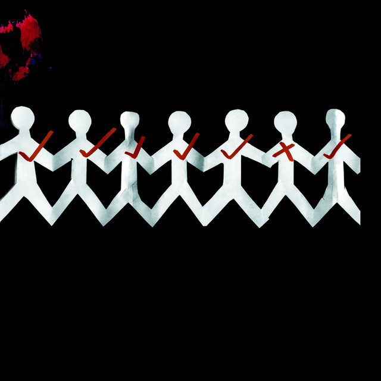

-
Top #4
Time of Dying - Three Dyas Grace
"Time of Dying" de Three Days Grace tiene algo que me transporta directamente a mis días de infancia, como si la canción fuera una ventana al pasado, a esos momentos llenos de emociones que no sabía cómo describir en ese entonces. La energía de la canción, con su mezcla de fuerza y vulnerabilidad, me hace recordar esos días en los que todo parecía ser un constante torbellino de sensaciones intensas, pero también de crecimiento y descubrimiento. La voz de Adam Gontier, cargada de emoción, me conecta con esa parte de mí que, de niño, sentía el mundo con mucha más claridad que ahora. Sus gritos no son solo de desesperación, sino de superación, como si estuviera enfrentando una batalla interna y saliendo victorioso. Y eso es lo que me recuerda a mi infancia: esos momentos en los que, aunque me sentía pequeño frente al mundo, también sentía que tenía una energía ilimitada para seguir adelante, para entender más de lo que pasaba a mi alrededor. La guitarra potente y la batería que marcan el ritmo de la canción me recuerdan a los días en los que, incluso en los momentos más tranquilos, siempre había algo que me impulsaba a seguir adelante, algo que me daba fuerza para enfrentar cualquier desafío, ya sea un día largo de escuela o un problema con amigos. Esa sensación de que, sin importar lo que pasara, siempre había una chispa de energía lista para estallar y darme esa dosis de valentía para seguir. Lo que más me sorprende de "Time of Dying" es cómo, al escucharla, siento como si estuviera volviendo a esos días, pero de una manera positiva. Hay algo en su poder que me hace sentir que esos recuerdos de mi infancia, aunque complejos, formaron parte de algo más grande, algo que me permitió crecer y entender quién soy. La canción no solo habla de lucha, sino de resiliencia, de la fuerza que uno descubre al enfrentar las dificultades y de cómo esos momentos difíciles, aunque intensos, nos hacen más fuertes. "Time of Dying" me recuerda que la vida, incluso cuando es desafiante, siempre tiene momentos de superación y aprendizaje. Es un recordatorio de cómo, en esos días de infancia, encontré las pequeñas victorias que, al final, se suman a algo mucho más grande. Es una canción que captura la esencia de crecer, de aprender de las dificultades y, sobre todo, de cómo esas experiencias nos impulsan a ser mejores, más fuertes y más sabios.
 -
Top #3
Departures - Ghost Brigade
"Departures" de Ghost Brigade me golpea con una sensación de vacío profundo, como si todo lo que alguna vez fue seguro estuviera desmoronándose lentamente. Desde el primer momento, siento cómo la voz de Manne Ikonen me envuelve con una crudeza innegable. Su tono es grave, lleno de dolor, pero lo que realmente me atrapa es cómo logra transmitir ese dolor sin adornos. Cada palabra parece pesada, cargada con la carga de algo irremediablemente perdido. Y cuando la canción llega a esos momentos de screams, es como si el mundo se detuviera. El grito de Manne no es solo un estallido de fuerza, es un eco de algo más profundo, algo que ha estado atrapado por demasiado tiempo. Es salvaje, desesperado, pero al mismo tiempo, tiene un poder increíble. Hay una liberación en esos gritos, un alivio que se siente como si el alma misma estuviera liberándose de algo que le ha pesado durante años. El ritmo de la canción cambia constantemente, llevando de momentos más tranquilos a esos picos de intensidad. En las partes más suaves, la música parece temblar, como si estuviera a punto de colapsar, pero entonces, de repente, las guitarras y los gritos irrumpen, rompiendo esa calma como un grito de auxilio. Es la tensión entre estos dos mundos, la calma y la tormenta, lo que realmente me atrapa. En esos momentos más suaves, todo parece suspenso en el aire, esperando a que se desate lo inevitable. Lo que más me impresiona de "Departures" es cómo la música puede ser tan desgarradora, pero también tan empoderante. Hay algo profundamente humano en cómo la banda maneja el dolor, transformándolo en algo catártico. En el caos de los gritos y los riffs de guitarra, siento una especie de purificación, como si la canción estuviera vaciándome de todo lo que no necesito y dejándome con una sensación cruda, pero liberadora. Al final, "Departures" no es solo una canción sobre el dolor, es también una declaración de fortaleza. Cada vez que la escucho, me recuerda que, aunque la partida y la pérdida son inevitables, hay algo de redención en abrazar ese caos y dejar que todo fluya. La emoción que surge de esa liberación es lo que la hace tan poderosa.
-
Top #2
The Design - Dead Letter Circus
"The Design" de Dead Letter Circus es una de esas canciones que te golpea de lleno, que te atrapa desde el primer instante y no te suelta. Al escucharla, siento cómo mi cuerpo se llena de una energía que no puedo controlar. Es como si cada acorde, cada palabra, tuviera el poder de mover algo dentro de mí, una vibración que conecta profundamente con mis emociones. La canción tiene esta cualidad única, como una sutil batalla entre la calma y la tormenta, que no solo me cautiva, sino que me mantiene en un estado de tensión agradable, esperando lo que vendrá. Los momentos más suaves parecen respirar, como si estuvieran esperando el estallido de algo grande. Y cuando esa explosión llega, no me siento abrumado; en lugar de eso, me eleva. Me hace sentir como si todo se hubiera alineado, como si la música hubiera encontrado el lugar perfecto en el que pertenezco. Es fascinante cómo la voz de Kim Benzie tiene la capacidad de ser tan poderosa y, al mismo tiempo, tan vulnerable. Cada palabra transmite una emoción tan genuina, tan profunda, que parece que habla directamente a mi alma. No es solo una voz; es una conversación interna, un eco de mis propios pensamientos, aunque de una forma que no puedo poner en palabras. En algunos momentos, siento que me está guiando a través de una tormenta emocional, pero sin perder el control, sin desmoronarse. Cada segundo de "The Design" es una montaña rusa de sensaciones. En ciertos momentos, la canción parece sumergirme en una calma profunda, solo para ser seguida por una oleada de energía que me sacude, pero en lugar de asustarme, me hace sentir más vivo, más conectado. Esa oscilación entre lo sereno y lo explosivo es lo que hace que la canción sea tan irresistible, como si me estuviera llevando de un estado a otro con cada compás, pero siempre manteniendo el control, siempre manteniendo la emoción a flor de piel. Lo que más amo de esta canción es cómo, a pesar de su intensidad, nunca se siente abrumadora. En lugar de eso, me hace sentir completo, como si la música fuera una extensión de mi propio ser. Cada vez que la escucho, es como si la experiencia fuera nueva, como si pudiera volver a encontrarme a mí mismo en ella una vez más. "The Design" no es solo una canción; es un reflejo de lo que siento, de lo que soy, un viaje que quiero recorrer una y otra vez.
-
Top #1
Love You To Death - Type O Negative
"Love You to Death" es más que una canción; es un suspiro del alma que trasciende el tiempo y el espacio. Cada acorde se despliega como un delicado velo de emoción, envolviéndome en su abrazo cálido, como si fuera un susurro del viento acariciando la piel. La voz que acompaña esa melodía tiene una suavidad tan intensa, tan profunda, que parece rozar los rincones más íntimos de mi ser. Es como si cada palabra pronunciada se fundiera con mis pensamientos, como si la canción hablara directamente a la esencia de lo que soy. El reverb, esa magia etérea que recubre la canción, me transporta a un lugar suspendido entre la realidad y el sueño. No es solo un efecto sonoro, es un eco de sentimientos, un reflejo de la vastedad de lo que se siente cuando el amor, la pasión y el dolor se entrelazan en una danza perfecta. Esa reverberación crea una atmósfera envolvente, casi onírica, como si estuviera flotando en un mar de notas que nunca cesa, que siempre está presente, incluso cuando el silencio llega. Lo que más me enamora de "Love You to Death" es cómo la canción me hace sentir infinitamente vivo. Es como si el latido de mi corazón siguiera el ritmo de sus acordes, como si la música fuera una extensión de mi propio ser, un espejo de mis emociones más profundas. Cada vez que la escucho, es como si el mundo se desvaneciera y todo lo que existiera fuera esa melodía que llena el aire con una belleza tan pura y cruda que es imposible no dejarse llevar por ella. Es una canción que toca esas partes de mí que no puedo expresar con palabras. Es un refugio donde puedo perderme y encontrarme a la vez. La magia de sus acordes, la delicadeza de su voz, la vibración del reverb: todo en ella se fusiona de manera tan perfecta que siento que nunca podría encontrar una canción que hablara tan profundamente de lo que soy. "Love You to Death" no solo es mi favorita, es un himno a la vida misma, un canto que nunca quiero dejar de escuchar.